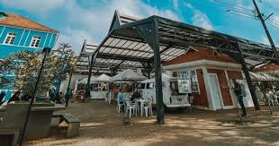

Feira do Empreendedor
Entre bandeirinhas, sabores e alegria

Entre bandeirinhas, sabores e alegria

A Feira do Produtor de São Mateus do Sul, no Paraná, é um espaço vibrante que valoriza a produção local. Agricultores e artesãos da região oferecem produtos frescos, orgânicos e artesanais, como frutas, verduras, queijos e pães. É o lugar ideal para quem busca qualidade, sabores autênticos e fortalecer a economia da comunidade. Um ponto de encontro que celebra a tradição e a riqueza do campo paranaense.

A feira surgiu como uma iniciativa local para valorizar pequenos produtores e agricultores familiares da região. No início, era apenas um espaço modesto onde moradores vendiam frutas, verduras e produtos caseiros. Com o tempo, a comunidade reconheceu o valor de oferecer produtos frescos, orgânicos e artesanais, fortalecendo a economia local e preservando tradições rurais. Hoje, ela se consolidou como um ponto de encontro cultural e comercial, atraindo tanto moradores quanto visitantes interessados em qualidade, sabor e autenticidade.
.jpeg)
Venha celebrar a cultura polonesa na Rua do Mathe, em São Mateus do Sul! Com música, comidas típicas e muita alegria, essa festa é para toda a família!
A Rua do Mathe, em São Mateus do Sul, é famosa por manter viva a cultura polonesa na região. Com suas casas coloridas e acolhedoras, é palco de festas tradicionais, comidas típicas e muita música folclórica.
Um lugar onde história, alegria e tradição se encontram, encantando moradores e visitantes de todas as idades.
Teremos comidas típicas deliciosas, música e dança para toda a família. Não fique de fora dessa tradição que encanta São Mateus do Sul!
Quero Participar